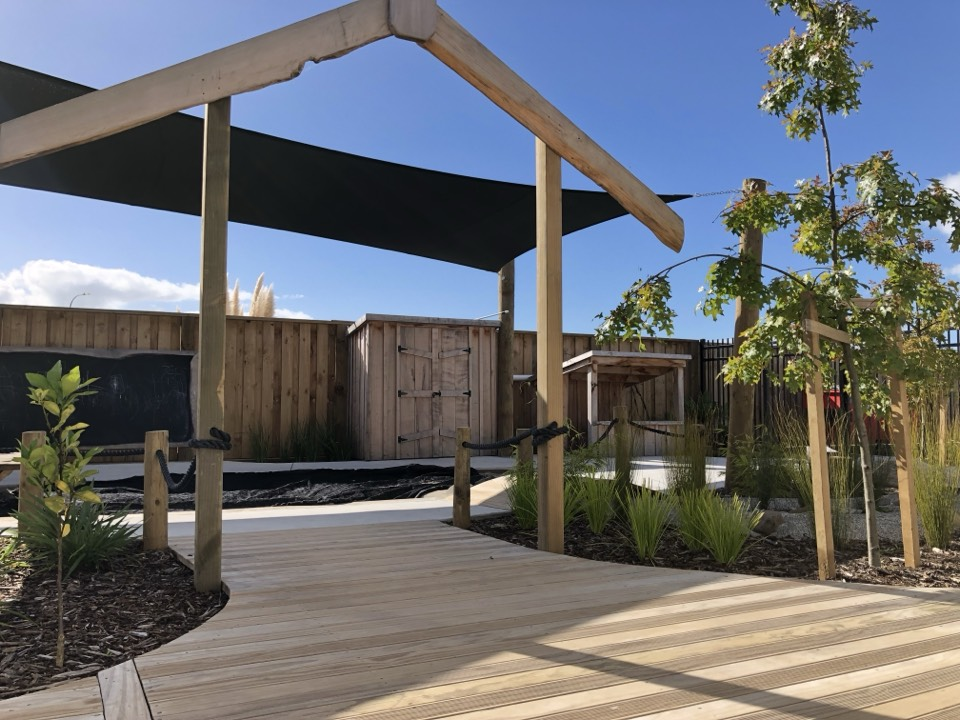
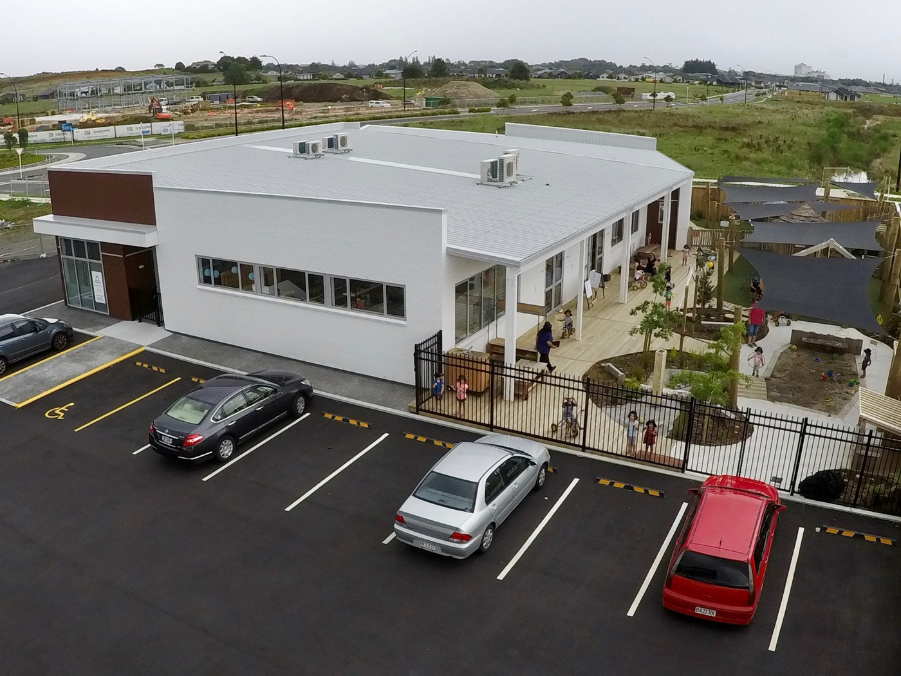
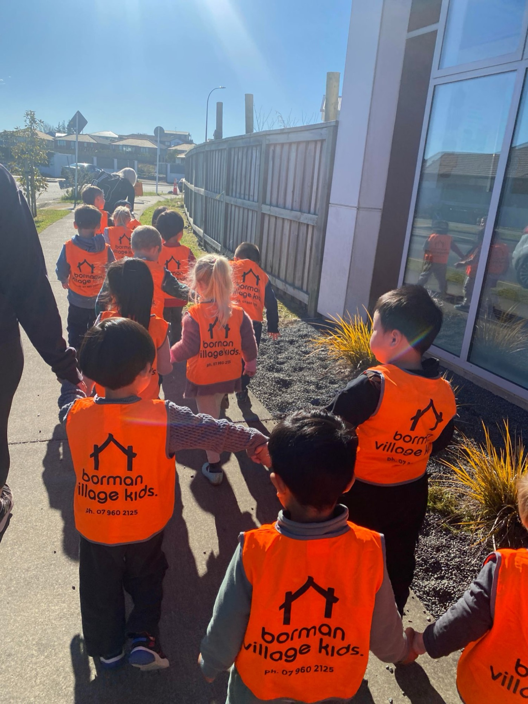

Three meals a day
Morning tea, a hot lunch and afternoon tea, freshly prepared in our own kitchen.

Home / About
Ko wai mātou, who we areBorman Village Kids reflects all that we have gathered over our years in early childhood, and what we believe is best practice for tamariki and their whānau.
We have a community where parents and children feel supported and can thrive, where you have a voice and we reflect your family's values and hopes.
Our owner is a father of four and has been a centre owner-operator since May 2000. That experience shapes everything here.
Borman Village Kids is decades of learning about what helps children, and families, feel settled, safe and ready to thrive.

We designed our centre ourselves, with classrooms shaped to the developmental needs of each age.
We focus on infant care, toddler transitions and preschool, in calm, natural spaces that exceed the Ministry's requirement for room per child.
Our programme is based on Te Whāriki, New Zealand's early childhood curriculum, weaving care and education through planned and everyday moments.
Those moments build the knowledge, skills and attitudes that grow confident, capable learners.

Cooked here each day with organic and whole foods where possible, and every dietary need catered for.
Morning tea, a hot lunch and afternoon tea, freshly prepared in our own kitchen.
We choose fresh, whole and organic ingredients wherever we can.
Allergies and dietary requirements are always carefully looked after.
Three meals a day. Morning tea, lunch and afternoon tea.
Whole and organic. Whole food ingredients wherever we can.
Everyone catered for. Every allergy and dietary need.
We have an open-door policy. Whānau are welcome to visit, share, and be part of the day, as much as they like.
We share your child's learning through Storypark, a secure online portfolio, privately with your family.
The best way to know our village is to visit. We would love to show you around.